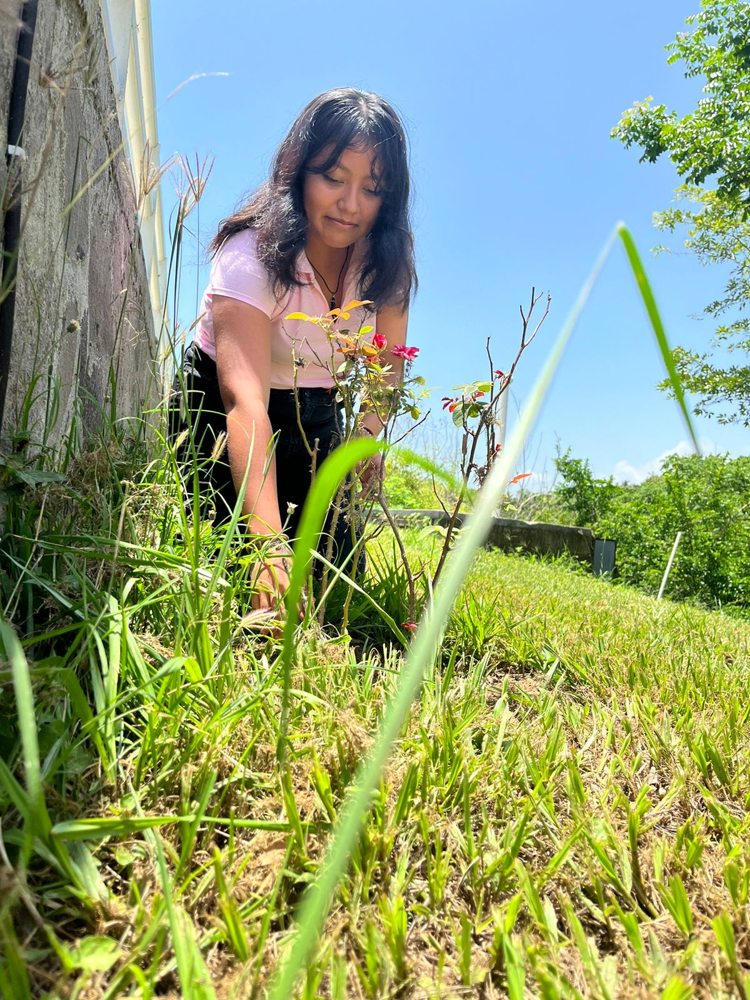
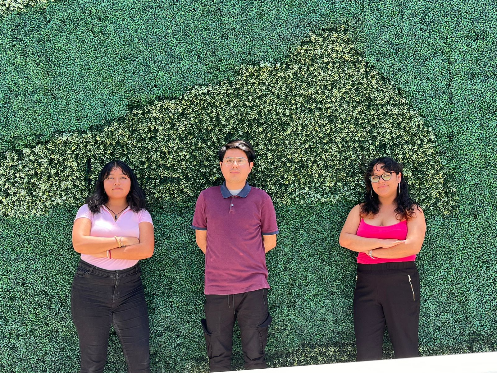
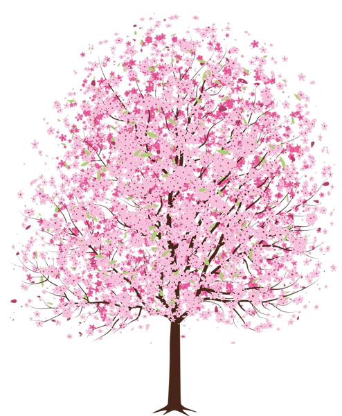

SOBRE NOSOTROS
Cada semilla sabe como llegar a ser un árbolSomos una comunidad dedicada a la reforestación. Unidos, plantamos árboles y promovemos prácticas sostenibles para proteger nuestro entorno.
Somos una comunidad dedicada a la reforestación. Unidos, plantamos árboles y promovemos prácticas sostenibles para proteger nuestro entorno.

La Fundación Bugambilia fue oficialmente constituida en el año 2024 tras el deseo de apoyar a la conservación de nuestro ecosistema y biodiversidad al contribuir con la disminución del impacto ambiental que el humano va generando día con día. Esto se hace principalmente con el apoyo que hace la comunidad de Gutiérrez Zamora, quienes donan plantas, semillas, etc. para poder contribuir por la causa.
Nuestra meta principal es reforestar las zonas de Gutiérrez Zamora donde se vean afectadas por las actividades humanas y por los desastres naturales. Reforestando junto con las personas de la comunidad organizando “eventos” cada cierto tiempo. Ya que con esto tendrá un efecto positivo para nuestra comunidad, y con esto podemos fomentar y hacer conciencia al resto de la comunidad en los efectos positivos que esto conlleva.
Mediante una planeación correcta en cada reforestación junto con una estratégica distribución adecuada de los recursos, se organizan los lugares en donde se llevará la actividad a realizar, en donde al terminar se mostrará en la página la ubicación de los lugares en donde se hizo la realización de la actividad.
Generosidad: Promover la donación y la ayuda a los demás.
Sostenibilidad: Compromiso con el cuidado del medio ambiente a través de la plantación y el cultivo de plantas.
Impacto comunitario: Generar un efecto positivo en la comunidad.
Transparencia: Comunicar claramente cómo se utilizan los fondos donados.
Colaboración: Trabajar junto a otros para ampliar el alcance e impacto.
Educación: Concientizar sobre la importancia de la conservación de la naturaleza.
Nuestra misión es promover activamente la conservación del medio ambiente y la biodiversidad a través de la donación y venta de plantas. Nos dedicamos fervientemente a proporcionar acceso a una amplia variedad de plantas saludables y sostenibles a nuestra comunidad, creemos firmemente en educar a nuestros clientes y seguidores sobre la crucial importancia de las plantas en el ecosistema global, destacando cómo cada especie contribuye al equilibrio natural y la preservación de hábitats vitales para la vida silvestre. Además, nos comprometemos a apoyar proyectos significativos de reforestación y conservación, canalizando una parte de nuestros ingresos hacia iniciativas que tienen un impacto directo en la restauración de ecosistemas degradados y la protección de especies en peligro. Al elegir nuestras plantas, no solo embelleces tu entorno, sino que también contribuyes activamente a la construcción de un futuro más verde y sostenible para las generaciones venideras.

Aspiramos a ser líderes destacados en la promoción de la sostenibilidad ambiental a través de nuestra fundación. Nuestro objetivo es crear un mundo donde la naturaleza no solo sobreviva, sino que prospere, asegurando la protección y restauración de los ecosistemas clave, nos dedicamos a fomentar una conexión profunda entre las personas y las plantas, reconociendo el papel crucial que desempeñan en nuestra salud y bienestar. Visualizamos un futuro donde cada individuo tenga acceso equitativo a espacios verdes y disfrute de los beneficios terapéuticos y estéticos de la naturaleza en su vida diaria. Además, promovemos activamente la plantación y cuidado de plantas nativas y sostenibles, trabajando con comunidades locales para fortalecer la capacidad de recuperación ambiental y mitigar los impactos del cambio climático, a través de estas iniciativas, no solo aspiramos a mejorar el entorno natural, sino también a inspirar un cambio positivo hacia prácticas más ecológicas y responsables en la sociedad.
Ofrecer materiales educativos y actividades prácticas que enseñen a la comunidad
sobre la importancia de proteger el medio ambiente y la biodiversidad local.
Proporcionar una selección de plantas saludables y ambientalmente responsables que se adapten
a nuestro clima local y ayuden a mejorar el entorno natural de nuestra comunidad.
Destinar una porción de las ganancias y donaciones a iniciativas comunitarias
de reforestación, restauración de hábitats naturales y conservación de especies autóctonas en nuestra región.
Organizar y tomar parte en actividades locales, como ferias de plantas, jornadas de limpieza y
talleres de jardinería, para promover el involucramiento activo de los residentes en la protección del medio ambiente.
Establecer asociaciones estratégicas con organizaciones locales, centros educativos y autoridades
municipales para reforzar las iniciativas de conservación y ampliar el impacto positivo en nuestra comunidad.
Implementar indicadores para medir y comunicar el impacto ambiental generado por nuestras
iniciativas dentro de la comunidad, resaltando los beneficios directos para el medio natural local.
Promover técnicas de jardinería y gestión de recursos que sean sostenibles y se adapten a
las condiciones locales, inspirando a otros residentes a adoptar hábitos más respetuosos con el medio ambiente.

Estefanie
Vazquez
Administrador del Proyecto
Responsable de planificar, organizar y controlar el desarrollo del proyecto
Andrey
Garcia
Especialista en Marketing Digital
Encargado de implementar estrategias de promoción y posicionamiento del sitio web en línea
Alondra
Gomez
Desarrollador Web
Responsable de la programación y codificación del sitio web